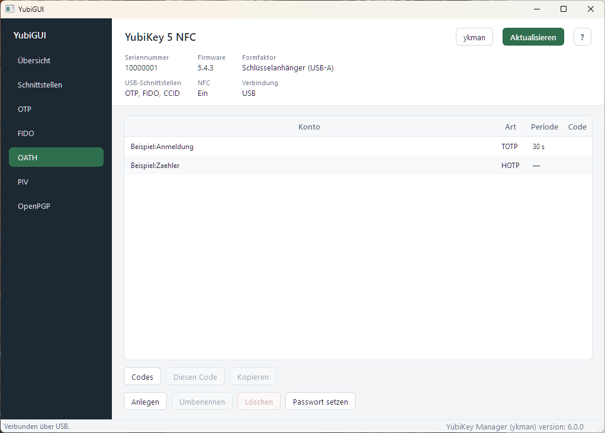

OATH
Die Seite listet die Konten auf dem Key: Name, Art (TOTP oder HOTP), Periode und, erst auf Wunsch, den Code. Codes erscheinen nur kurz. Sie landen nicht von selbst in der Zwischenablage.

- Codes berechnet die Codes der Konten. Diesen Code gilt für die gewählte Zeile.
- Kopieren legt einen Code erst auf ausdrücklichen Druck in die Zwischenablage.
- Anlegen nimmt eine
otpauth://-Adresse. - Umbenennen ändert den Namen eines Kontos.
- Löschen entfernt ein Konto und verlangt die Seriennummer.
- Passwort setzt oder ändert ein OATH-Passwort. Es geht an die Konsole von
ykman. YubiGUI speichert es nicht auf dem Rechner und bietet das Merken durchykmannicht an. Steht der Knopf auf Passwort ändern, ist schon eines gesetzt.
Ist die Anwendung gesperrt, öffnet derselbe Knopf den Dialog zum Entsperren.